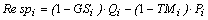
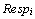
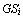
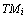
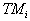
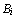

Respiration includes all non-usable ‘model currency’ that leaves the box representing a group.
When the currency is energy or carbon, the bulk of the assimilated food will end up as respiration. If, however, a nutrient (e.g. phosphorus or nitrogen) is used as currency, all nutrients that leave the box is re-utilized; in this case, respiration is nil.
Primary producers will not have respiration if the unit is energy based. Note, however, that for Carbon models you can enter a Q/B for producers (the input box will be colored yellow, but click it and you can enter a Q/B value nevertheless), and respiration values will be calculated for the producers.
The respiration of any living group (i) can be expressed as,

Eq. 23where

is the respiration of group i,
is the fraction of i's consumption that is not assimilated, is the consumption of i, and
is the consumption of i, and 
is the proportion of the production that can be attributed to primary production. If the unit is a nutrient
is equal to zero, irrespective of whether the group is an autotroph or not (nutrients are not ‘produced’), and, is the total production of group i.
is the total production of group i.
Respiration is used, in Ecopath, only for balancing the flows between groups. Thus, it is not possible to enter respiration data. However, known respiration values (i.e., the metabolic rate) of a group can be compared with the output, and the input parameters adjusted to achieve the desired respiration. (For an application of this approach, see Browder, 1993)
Respiration is a non-negative flow expressed, e.g., in t · km-2 · year-1. If the currency is a nutrient, (e.g., nitrogen or phosphorus), respiration is zero: nutrients are not respired, but egested and recycled within systems.
Bi · (Q/B)i · (1 - GSi)Eq. 24
where

is the biomass of group i; is the consumption / biomass ratio of group i; and
is the consumption / biomass ratio of group i; and  is the part of the consumption that is not assimilated.
is the part of the consumption that is not assimilated.
The three values needed for the estimation are all input parameters. Assimilation is a flow expressed, e.g., in t · km-2 · year-1.
The ratio respiration / biomass can take any positive value, and has the dimension time-1.